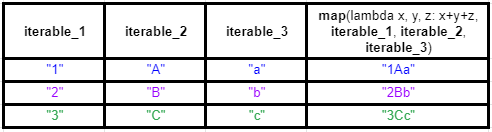
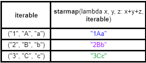

Notes d'apprentissage de Python : traitement des séquences avec un style fonctionnel - map
Contenu
Contexte
Ce billet s’inscrit dans une série de billets sur le traitement des séquences avec un style fonctionnel en Python.
NB1 : La version de Python utilisée dans les exemples de code est la version 3.
NB2 : Ce billet a été modifié le 24/05/2021, par l’ajout d’un paragraphe sur le comportement de map avec plusieurs itérables.
Principe
La fonction map est native tout comme filter et prend également en paramètre une fonction et une séquence d’éléments.
La fonction map permet d’appliquer cette fonction à chaque élément de la séquence et produit une nouvelle séquence résultante dont chaque élément est le résultat de l’application de cette fonction sur chaque élément de la séquence initiale.
Ainsi map produit une nouvelle séquence dont chaque élément est l’élément correspondant de la première liste sur laquelle on a appliquée la fonction passée en paramètre.
Tout comme filter, la séquence retournée par la fonction map est un objet iterator.
Voyons tout cela à travers un exemple simple dans lequel on transforme une séquence de nombres entiers en une séquence des carrés correspondants.
|
|
Si vous exécutez ce code avec Python vous obtiendriez quelque chose de similaire à ce qui suit :
|
|
Comparaison avec les boucles for et les compréhensions
L’équivalent avec une boucle for pourrait s’écrire comme suit :
|
|
Qui produirait l’affichage suivant :
|
|
Ce n’est pas strictement équivalent car comme on peut le constater dans l’exemple, map retourne un iterator. Pour faire quelque chose de vraiment équivalent, il faudrait utiliser une fonction génératrice comme ci-après.
|
|
Qui après exécution donne quelque chose de similaire à ce qui suit :
|
|
Bien sûr on peut écrire du code équivalent sous forme de compréhension, ce qui est considéré comme un style plus pythonique car plus lisible :
|
|
La fonction map retourne un iterator
La fonction map retourne un iterator (comme la fonction filter) comme cela a été évoqué dans le paragraphe précédent.
Ainsi, le retour de la fonction map peut être manipulé comme tel. On peut par exemple utiliser le résultat directement avec les fonctions (natives) sum, max ou min.
|
|
Ce qui donne :
|
|
Et si nous voulons une liste ou un ensemble à partir du résultat de note map, il faut le convertir vers le type approprié.
Par exemple pour transformer le résultat de map vers une liste :
|
|
|
|
Ou encore pour transformer le résultat de map en un ensemble :
|
|
|
|
On peut également convertir l'iterator obtenu avec map vers un dictionnaire si ses éléments correspondent à des paires, de la même manière que l’on peut convertir une liste de paires vers un dictionnaire.
|
|
Dans l’exemple ci-dessus, la fonction passé à map retourne un tuple et non plus juste une valeur scalaire. Cela nous donne le résultat ci-après.
|
|
Il est possible tout comme avec filter, les compréhensions) et de manière générale avec les iterator en Python, de manipuler des séquences potentiellement infinies (en exploitant par exemple le module itertools). Voici un exemple :
|
|
En utilisant ici la fonction count du module itertools, je génère un iterator infini de nombres entiers à partir de 1 et j’applique la fonction map dessus. Avec la fonction takewhile, je prends des valeurs de l'iterator généré par map tant que les valeurs sont strictement inférieures à 1000.
|
|
Combiner map et filter
Avec les compréhensions on peut effectuer un filtrage sur les éléments.
Avec map on ne peut pas le faire aussi directement que dans une compréhension mais on peut bien sûr combiner mapet filter pour avoir le même résultat.
|
|
Ici on a fait le choix de travailler en 2 temps, en créant une variable intermédiaire pour l'iterator produit par filter.
Bien sûr on pourrait passer directement filter comme paramètre de map.
Néanmoins les expressions de cette forme deviennent vite peu lisibles.
|
|
Contrairement à des langages fonctionnelles comme Elixir ou Clojure, il n’y a pas de sucre syntaxique comme le pipe operator |> ou des threading macros comme ->> pour faciliter l’écriture d’une chaîne d’opération sur des iterator.
De plus, on ne peut pas enchainer les fonctions comme map, filter, reduce ou les fonctions de itertools comme on le ferait avec les stream en Java par exemple, car justement ce sont des fonctions, pas des méthodes de l’objet iterator.
Il est donc souvent préférable pour des questions de lisibilité de passer par des variables intermédiaires pour éviter d’avoir des appels de fonctions imbriqués.
Il y a plusieurs manières d’obtenir l’équivalent d’une boucle ou d’une compréhension imbriquée avec map, mais cela implique d’autres fonctions que juste map. Ce point est développé dans le billet sur flatmap
La fonction map en Python peut traiter plusieurs itérables
La fonction map en Python peut en fait prendre plusieurs itérables, pas juste un seul.
Il faut que la fonction qu’applique map prenne elle-même en paramètre autant d’arguments qu’il y a d’itérables fournis.
Chaque élement séquence produite par map est résultat de l’application de la fonction sur les éléments correspondants des différents itérables.
Un exemple pour clarifier :
|
|
La fonction lambda prend 3 arguments et réalise leur concaténation en prenant respectivement le premier élément de chacun des itérables, puis le second, etc.
|
|
Avec une compréhension, vous obtiendriez le même résultat avec un code similaire à ce qui suit :
|
|
On notera l’utilisation de la fonction zip dans la compréhension, c’est ce que fait map avec plusieurs itérables d’une certaine manière, ils sont zippés implicitement.
Dans itertools, il existe une variante de le fonction map qui comme dans l’exemple de la compréhension fonctionnerait à partir d’un ensemble d’itérables zippés ou à partir d’un itérable de tuples, la fonction starmap.
|
|
ou à partir d’une liste de tuples directement
|
|
Ce qui dans un cas comme dans l’autre, donnerait le même résultat qu’avec map.
Pour résumer le fonctionnement de map avec cet exemple.

A comparer avec le fonctionnement de starmap.

Si vous avez plusieurs itérables à partir desquels vous souhaiteriez produire une nouvelle séquence en fonction de leurs éléments de même indice, map peut vous éviter d’utiliser la fonction zip et c’est peut-être un exemple où vous la préférerez à l’utilisation d’une compréhension.
Si vous avez directement un itérable avec un tuple d’éléments à partir duquel vous voulez produire une nouvelle séquence dont les éléments sont construits à partir des composants du tuple, starmap peut être à envisager.
Attardons nous sur quelques autres exemples inspirés de la documentation de la bibliothèque standard de Python.
Si nous voulons avoir une liste des nombres entre 1 et 9 élevés à la puissance d’eux-mêmes, on pourrait écrire quelque chose de la forme :
|
|
Ce qui nous donnerait l’affichage suivant :
|
|
On peut également travailler avec des séquences (potentiellement) infinies.
La fonction repeatde itertools produit une séquence infinie de la valeur qu’on lui a passé en paramètre.
Pour produire la liste des puissance de 2 des nombres de 1 à 9, on pourrait écrire quelque chose de la forme :
|
|
Comme pour la fonction zip, c’est la plus courte des 2 séquences qui déterminera la taille de la séquence produite.
La fonction repeat(2) produit ici une liste potentiellement infini de 2 mais seulement 9 valeurs se retrouveront utilisées pour la liste finale produite par map.
|
|
Il est également possible que toutes les séquences passées à map soit infinies.
En partant de l’exemple précédcent, une manière d’avoir la liste des puissances des nombres entiers à partir de 1 et d’afficher les 20 premiers pourrait être la suivante :
|
|
La fonction count de itertools génère une liste de valeurs à partir d’une valeur de départ (entière ou réelle) et d’un pas de progression (lui aussi entier ou réel), la valeur par défaut de ce pas étant la valeur 1 (qui sera la valeur du pas dans notre exemple).
Ici count(1) produit la séquence 1, 2, 3, ....
On utilise islice toujours de itertools pour extraire l’intervalle des 20 premiers éléments de l'iterator produit par map, en précisant l’itérable duquel sélectionné la valeur de départ, l’index de départ et l’index de fin (non-inclus).
|
|
Synthèse
La fonction map est une fonction native de Python. Elle prend en paramètre une fonction et un iterator ; elle retourne un nouvel iterator dont chaque élément est le résultat de l’application de cette fonction sur chaque élément de la séquence initiale.
La fonction map peut être vue comme l’abstraction d’une boucle sur une liste pour appliquer une fonction sur chaque élément de la liste et produire une nouvelle liste résultante.
La fonction map en Python peut prendre plusieurs itérables en paramètres.
Il est bien sûr possible de combiner map avec filter pour filtrer avant d’appliquer map ou au contraire après sur l'iterator produit par map.
L’ensemble du code du billet est disponible dans un gist.
Ressources
- Billet chapeau sur le traitement des séquences avec un style fonctionnel
- Billet sur filter
- Billet sur reduce
- Billet sur flatmap
- gist des exemples du billet
- Notion de Collection Pipeline
- Avec les opérations communes sur ce Collection Pipeline :
- Article map(), filter() et reduce () ?
- RxJS Marbles
- RxPy
- ReactiveX
Auteur TGITS
Modifié 2021-05-29